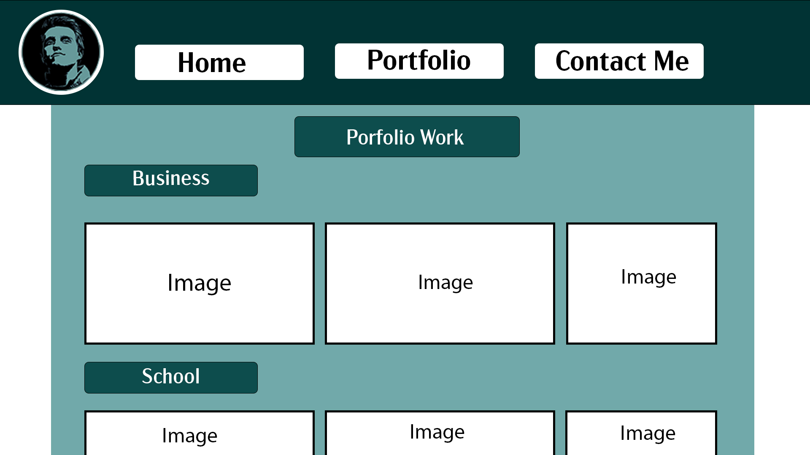
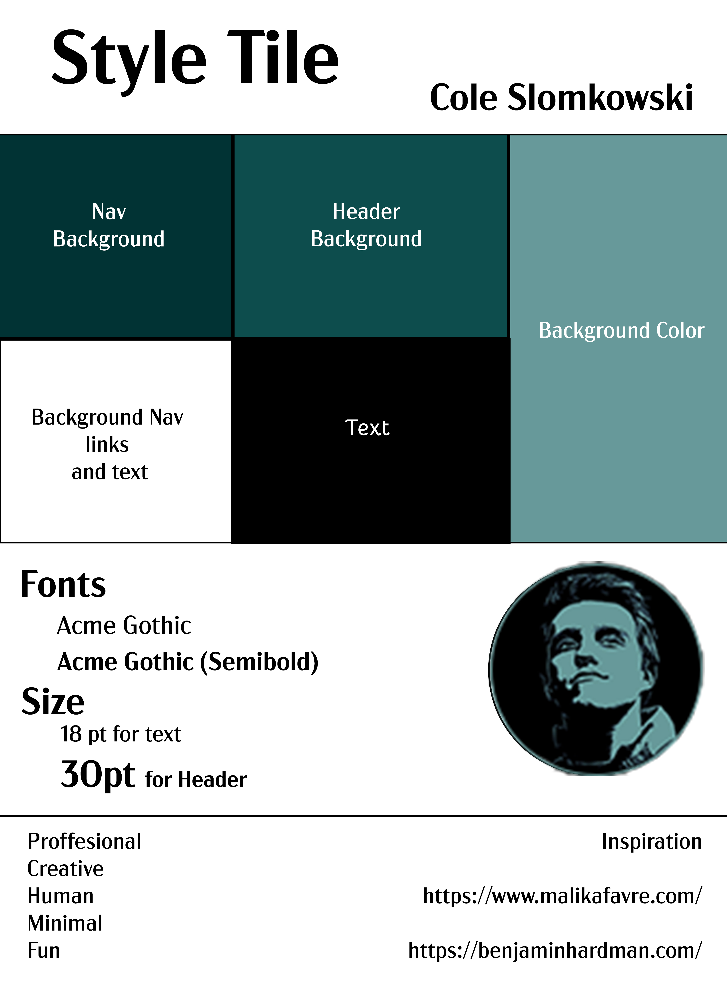

Case Study 1
Project: AREPR homepage redisign
Objective: Create style tiles, mockups, and redisgn of AREPRs main homepage.

Work: For this project we were put on teams, while working together I created the style tile as well as the final website redesign from our groups research.
End result: We were able to present a better looking and effecient site that offered more movement on the page as well as a more cohesive feel from the elements and design.
Reflection: Although it was a group project I created most of the deliverables for the client which made me proud because I get to display them as my own work.

Case Study 2
Project: Creating My own Website
Objective: To create a multipage layout that included javascript, a Portfolio, and a page dedicated to case studies.
Work: I had to first create a narrative for myself and my site thinking about colors and layouts that spoke of and to me. I had to create wireframes and mockups to display disfferent layouts. A full scale coded site then was created using Dreamweaver to display this website.



End result: I was able to create a full functioning website with multiple pages with interactive javascripting that brings movement to my images on my portfolio and case studies page. Movement was needed to make the page less static and more lively but also keeping it minimal as this was a personal main goal of this project.

Reflection: I had allot of trouble figurring out how to scale images while also having them be responsive to different layouts this is my best example of what I could do given the the time I had. I also wanted to keep all my work as simple as I could not making the site to crazy with extra details that werent necessary.